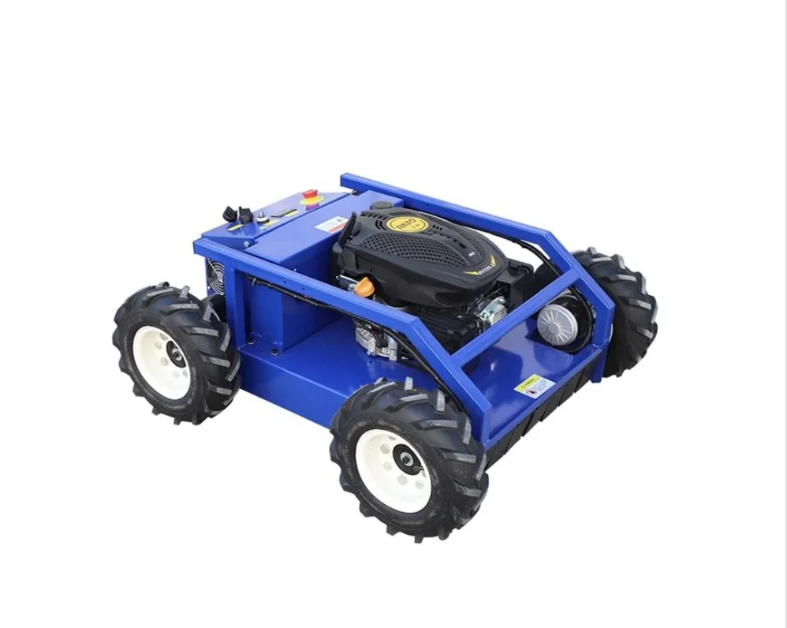

4 Roues

LM500W
Compacte sur roues · Vergers & jardinsLa porte d'entrée de la gamme. Châssis bleu sur 4 roues motrices, batterie 24V/70Ah grande capacité pour 4 à 5 heures d'autonomie. Idéale pour vergers, jardins de villa et entretien d'allées.
Largeur de coupe500 mm
Hauteur de coupe7 cm
Poids machine105 kg
Pente max35°
Vitesse5 km/h
Cylindrée225 cc
- Batterie 24V/70Ah — 4 à 5 h d'autonomie
- Démarrage et arrêt par télécommande
- Personnalisable selon usage (verger, villa, voirie)